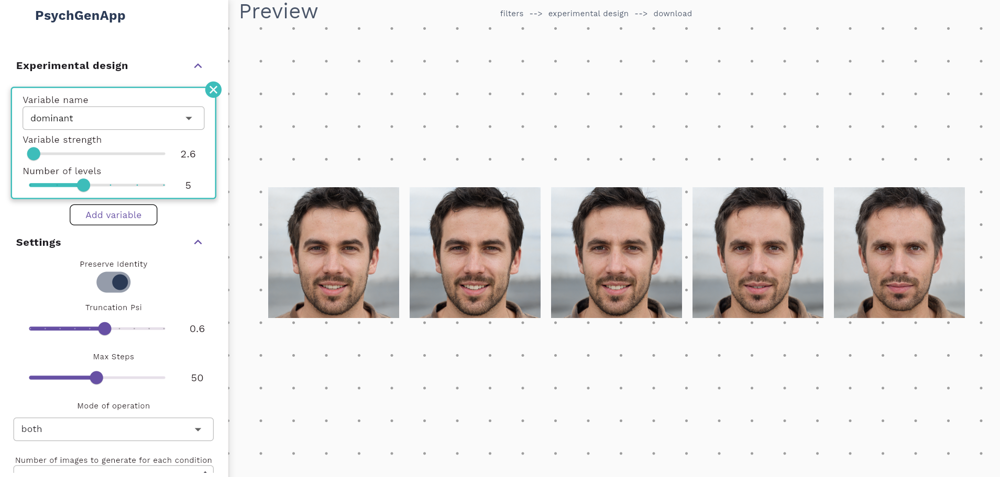

Join The Research Newsletter
Share your e-mail to get updates on our latest research papers and open source methods:
Read the Preprint explaining our upcoming methods
Contact Us
If you have any questions, please contact us at skn.socialai@psych.uw.edu.pl.